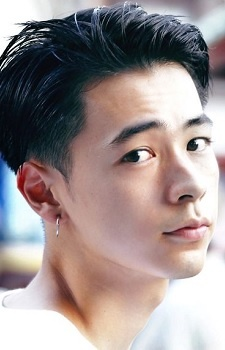
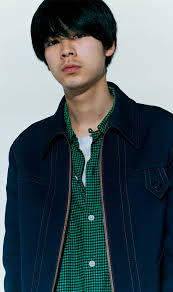

|  |
Ryou Narita is a Japanese actor and model. Narita is affiliated with Sony Music Artists.
|
 |
|---|
| |
Katsuhiko Teshigawara | Your Name | Katsuhiko Teshigawara is a friend of Mitsuha Miyamizu. |
Go Back to Main Page |
Go Back to Homepage |
|
|
|
OR |
|